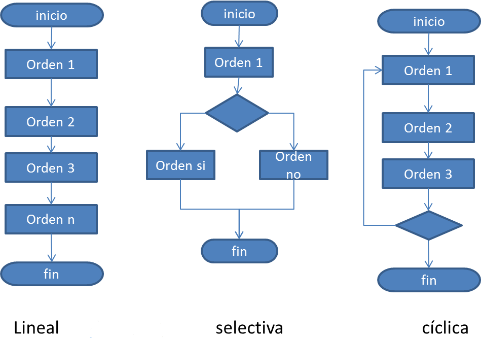

Para regresar al menú principal presione aquí ---> Menú
La programación estructurada es un paradigma de programación orientado a mejorar la claridad, calidad y tiempo de desarrollo de un programa de computadora recurriendo únicamente a subrutinas y tres estructuras básicas: secuencia, selección (if y switch) e iteración (bucles for y while);
A finales de los años 1970 surgió una nueva forma de programar que daba lugar a programas más legibles, fiables y eficientes. Se basaban en el teorema del programa estructurado, propuesto por Böhm-Jacopini, que demuestra que todo programa puede escribirse utilizando únicamente las tres estructuras de control siguientes:
La programación estructurada es un paradigma de programación orientado a mejorar la claridad, calidad y tiempo de desarrollo de un programa de computadora recurriendo únicamente a subrutinas y tres estructuras básicas: secuencia, selección (if y switch) e iteración (bucles for y while);
A finales de los años 1970 surgió una nueva forma de programar que daba lugar a programas más legibles, fiables y eficientes. Se basaban en el teorema del programa estructurado, propuesto por Böhm-Jacopini, que demuestra que todo programa puede escribirse utilizando únicamente las tres estructuras de control siguientes:
- Estructura secuencial. Está formada por una secuencia de llamadas a instrucciones del lenguaje o funciones del programador.
- Estructura condicional. Es aquella que ejecuta una estructura si se cumple una condición booleana.
- Estructura iterativa con condición. Es aquella que ejecuta una estructura una y otra vez si se cumple una condición booleana.


Informacion de calidad